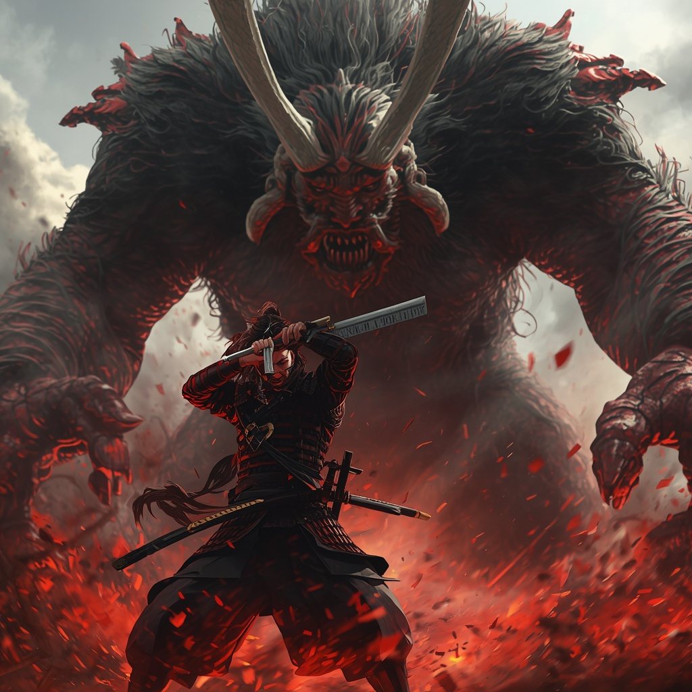

The Curse
"Every wound I take, another demon grows. Every day I live, another price is owed."
In feudal Japan's final, haunted age, samurai Takashi Onoda watched his lord fall to betrayal. With his dying breath, the lord placed a curse: Onoda cannot die. Not in battle. Not from hunger. Not from age.
But immortality has a cost. The Yokai smell it on him. The more he fights, the more they gather. And the deeper he descends into the realm between worlds, the less human he remains.
Protagonist
Takashi Onoda
Former retainer of House Kurokami. Skilled blade. Cursed soul. He carries the weight of an immortality he never asked for, and the rage of a man who cannot even choose to rest.
